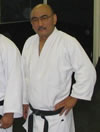

Atsushi "Al" Ikemoto
Rank: Rokyudan (6th dan)
Member Since: 1989
Al Ikemoto was born on D-Day in the Tule Lake Concentration Camp in California.
His father Teruo was a noted Judo competitor and teacher, and began Al's study of Judo in the 1950's.
Sensei Ikemoto has won several Judo competitions including a 1st place at the 1967 Pan Am Regional
Eliminations.
In addition to Judo, Al has studied Danzan-Ryu Jujutsu, Seifukujutsu, Wing Chun, Sil Lum, Tai Chi,
wrestling, and Small-Circle Jujitsu under Prof. Wally Jay.
Sensei Ikemoto holds a Rokudan in Judo and a Godan in Jujitsu. He is a Life Member of Kilohana
Martial Arts Association, Jujitsu America, and is a member of the Martial Arts Hall of Fame.
Sensei Ikemoto also holds numerous certificates in restorative therapy including Basic and Advanced
Seifukujitsu as taught by Professor Sig Kufferath and Professor Tony Janovich, Accupressure as taught by
Professor Jack Carter, and is an Instructor of Okazaki Restoration Therapy awarded by Professor Sig Kufferath
and Professor James Muro.
His international studies include certficates in Qi Gong Therapy from the Medical Qi Gong Center in Beijing,
China, Basic Thai Massage from Wat Po Traditional Medical School in Bangkok, Thailand, and Universal Life
Energy Levels I-V as taught by Steven Tran.